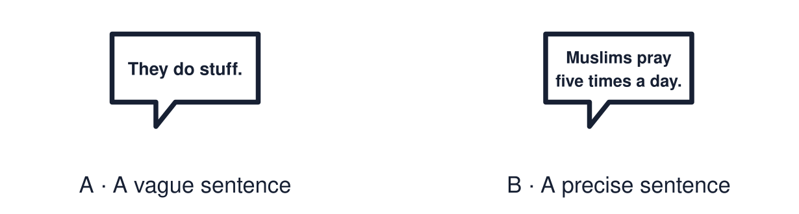

Arrival choices
Previous lesson reminder:

Start with 1 and 2. Try 3 and 4 when ready. Reading and exact scribing are available.
1 Name one feature of a mosque and its purpose.
Support: Use the reminder strip or talk it through with an adult.
2 Which meaning fits practice?
Support: Choose: Something people do as part of their beliefs OR A set of actions done in a fixed way with meaning.
3 Define the word “ritual”.
Support: Use the model evidence anchor word or read one relevant card together.
4 Is all prayer spoken aloud?
Support: Give a reason when ready.
Stretch: use a precise example or explain which detail supports your answer.
Evidence cards
Read, point or listen. Keep the source label with any detail you use.
A Salah
Salah is Muslim prayer, offered five times a day facing Makkah. It follows a set pattern of standing, bowing and kneeling, so it is a ritual.
Source: Authored RE summary
Limit: Belief and practice vary between individuals and communities.
B Holy Communion
In Holy Communion Christians share bread and wine to remember Jesus. It is an act of worship done in community.
Source: Authored RE summary
Limit: Christian churches hold Communion in different ways and give it different names.
C Vague and precise
Vague: “They do a thing with bread.” Precise: “Christians share bread and wine in Holy Communion, an act of worship.”
Source: Authored classroom resource
Limit: Precise words still need a respectful tone.
D Word bank
practice · worship · ritual · prayer · sacred · community
Source: Authored classroom resource
Limit: A word bank is a support. Use the words that fit.
Shared investigation
1. Improve each vague description using RE vocabulary.
2. Check that each new sentence is accurate.
Work with a partner or adult, or use your own table. One person suggests; the other checks the evidence. Swap after one turn. Passing is allowed.
Move or match the cards
| Cards to use |
|---|
| Christians eat bread at church. |
| Muslims do praying stuff a lot. |
Rewrite one draft and explain what you changed.
Support: Read one evidence card together. Highlight a useful detail. Rehearse with: ___ is a ___ in which ___.
Further challenge: Explain why accurate vocabulary is a way of showing respect.
Supported independent task
Complete this route only. Use accurate RE vocabulary to describe one religious practice.
1. Choose one practice card.
2. Complete the cloze sentence using three words from the bank.
3. Read it to an adult.
Support: Read one evidence card together. Highlight a useful detail. Rehearse with: ___ is a ___ in which ___. Complete the organiser one space at a time. ___ is a ___ in which ___.
An adult may read or scribe your exact response. They should not choose the answer.
Standard independent task
Complete this route only. Use accurate RE vocabulary to describe one religious practice.
1. Choose one religious practice.
2. Describe it using at least three key terms.
3. Underline the key terms.
Support: ___ is a ___ in which ___.
Check the required evidence and revise one detail.
Stretch independent task
Complete this route only. Use accurate RE vocabulary to describe one religious practice.
1. Describe one practice using at least four key terms.
2. Explain its meaning for believers.
3. Note one way the practice varies.
Support: Choose the evidence independently. Use the frame only if it helps.
Explain why accurate vocabulary is a way of showing respect.
Exit ticket
Choose a response mode. You may give your answers privately to an adult.
Define the word “ritual”.
Is all prayer spoken aloud?
Support: ___ is a ___ in which ___.
Further challenge: Explain why accurate vocabulary is a way of showing respect.